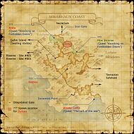

Description
Misareaux Coast is an outdoor area in Tavnazian Archipelago.
Map

Involved in Quests / Missions
| Quest / Mission | Type | Starter | Location |
|---|---|---|---|
| Knocking on Forbidden Doors | General | Enaremand | Tavnazian Safehold (J-7) |
| Return to the Depths | General | Ayame | Metalworks (K-7) |
| The Call of the Sea | General | Anteurephiaux | Tavnazian Safehold (J-8) |
| X Marks the Spot | General | Despachiaire | Tavnazian Safehold (K-10) |
NPCs
- Storage Compartment
Notorious Monsters
| Name | Level | Drops | Steal | Family | Spawns | Notes |
|---|---|---|---|---|---|---|
| Gration | 79 | Tatami Shield | — |  GigasImage source GigasImage source | — | — |
| Odqan | 50-51 | Atlaua's Ring Bravo's Subligar Cluster Core | — |  ClustersImage source ClustersImage source | — | — |
| Upyri | 43-47 | Vampire Boots Vampire Cloak Vampire Earring Vampire Mask | — |  Giant BatsImage source Giant BatsImage source | — | — |
| Ziphius | 60-62 | Hospitaler Earring | — |  PugilsImage source PugilsImage source | — | — |
Regular Monsters


Event Monsters
| Name | Level | Drops | Steal | Family | Spawns | Notes |
|---|---|---|---|---|---|---|
| Alsha | — | — | — |  HumanoidsImage source HumanoidsImage source | 1 | Spawned Quest: Knocking on Forbidden Doors |
| Bloody Coffin | 50-52 | — | — |  CrabsImage source CrabsImage source | 1 | Spawned Quest: The Call of the Sea |
| Boggelmann | — | — | — |  BugardsImage source BugardsImage source | 1 | Spawned Mission: Calm Before the Storm |
| Warder Aglaia | — | — | — |  SpheroidsImage source SpheroidsImage source | 1 | Spawned Mission: A Place to Return |
| Warder Euphrosyne | — | — | — | SpheroidsImage source | 1 | Spawned Mission: A Place to Return |
| Warder Thalia | — | — | — | SpheroidsImage source | 1 | Spawned Mission: A Place to Return |
Story walkthroughs in this area
| Story | Mission / quest |
|---|---|
| RoZ Q1 | Storms of Fate |
| CoP 2-4 | An Eternal Melody |
| CoP 2-5 | Ancient Vows |
| CoP 4-1 | Sheltering Doubt |
| CoP 4-2 | The Savage |
| CoP 4-3 | The Secrets of Worship |
| CoP 6-2 | A Place to Return |
| CoP 7-2 | Flames in the Darkness |
| CoP 7-4 | Calm Before the Storm |
References
External references describe their own server or retail rules. Documented Zenith changes take precedence.
Map credits: Map 1 — HorizonXI Wiki. Original game maps © SQUARE ENIX; redrawn maps retain the credited authorship and license.

Supplemental NPC names and exits are from the base-world snapshot; expansion conditions can affect availability.
Additional level-75 reference


|
The coastline of the Tavnazian Archipelago - a tiny island off the west coast of Quon which was once home to the proud nation of Tavnazia. Before the Great War, this region was actually a peninsula connected with the mainland. However, a devastating explosion caused by a secret weapon of the beastmen resulted in the disintegration of a large portion of the surrounding landscape. The explosion also sent the nation's capitol, a city built on the profits of its thriving trade business, into ruin. The remnants of the beastmen army remain in control of the archipelago, and until now, it was thought that none of the former inhabitants had survived. Connecting Areas
|
Involved in Quests/Missions
| Quest | Type | Starter | Location |
| Knocking on Forbidden Doors | General | Enaremand | Tavnazian Safehold (J-7) |
| Return to the Depths | General | Ayame | Metalworks K-7 |
| The Call of the Sea | General | Anteurephiaux | Tavnazian Safehold (J-8) |
| X Marks the Spot | General | Despachiaire | Tavnazian Safehold (K-10) |
| Mission | Country | Starter | Location |
| Promathia Mission 2-4:An Eternal Melody | Promathia | --- | --- |
| Promathia Mission 2-5:Ancient Vows | Promathia | --- | --- |
| Promathia Mission 4-1:Sheltering Doubt | Promathia | --- | --- |
| Promathia Mission 4-3:The Secrets of Worship | Promathia | --- | --- |
| Promathia Mission 6-2:A Place to Return | Promathia | --- | --- |
| Promathia Mission 7-2:Flames in the Darkness | Promathia | --- | --- |
| Promathia Mission 7-4:Calm Before the Storm | Promathia | --- | --- |
Weather
Logging
|
Fishing
NPCs Found Here
| ||||||||||||||||||||||||||||||||||||||||||||||||||||||||||

Notorious Monsters Found Here
|
Name |
Level |
Drops |
Steal |
Family |
Spawns |
Notes | |||||||
| Alsha | Unknown | Humanoid | |||||||||||
| Bloody Coffin | 50 - 52 | Crab | |||||||||||
| Boggelmann | Unknown | Bugard | |||||||||||
| Gration | 79 | Gigas | 1 | ||||||||||
| Odqan | 50 - 51 | Cluster | 1 | ||||||||||
| Upyri | Unknown | Giant Bat | 1 | ||||||||||
| Warder Aglaia | Unknown | Spheroid | |||||||||||
| Warder Euphrosyne | Unknown | Spheroid | |||||||||||
| Warder Thalia | Unknown | Spheroid | |||||||||||
| Ziphius | 60 - 62 | Pugil | 1 | ||||||||||
|
HP = Detects Low HP; M = Detects Magic; Sc = Follows by Scent; T(S) = True-sight; T(H) = True-hearing JA = Detects job abilities; WS = Detects weaponskills; Z(D) = Asleep in Daytime; Z(N) = Asleep at Nighttime | |||||||||||||
Mobs Found Here
Adapted from Eden Wiki: Misareaux Coast · Contributors and history · CC BY-SA 4.0. Revision 45785. Layout, links and optional background text adapted for Zenith.